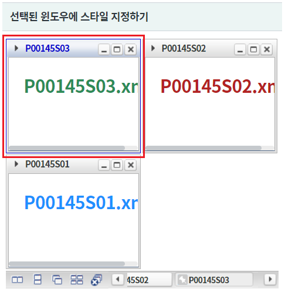
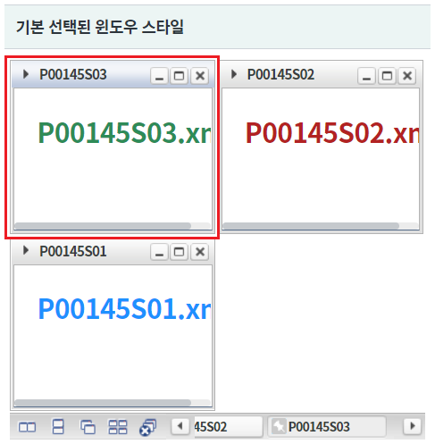
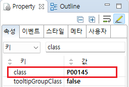
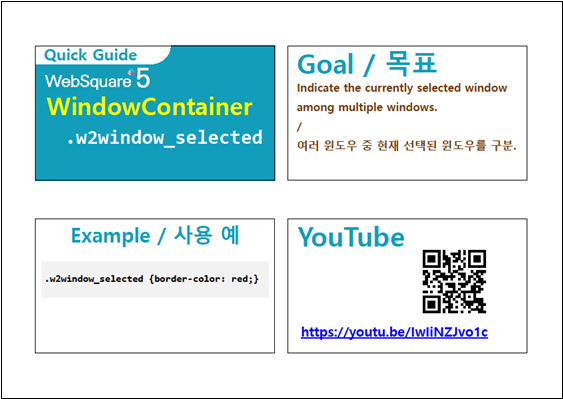

선택된 윈도우의 스타일을 적용하는 예제입니다. 선택된 윈도우는 class "w2window_selected" 가 추가됩니다. class "w2window_selected"를 재정의하여 기본 스타일을 변경할 수 있습니다.
선택된 윈도우에 스타일 지정
기본 선택된 윈도우 스타일
영역 [선택된 윈도우에 스타일 지정하기]와 영역 [기본 선택된 윈도우 스타일]의 WindowContainer를 비교합니다.
영역 [선택된 윈도우에 스타일 지정하기]의 WindowContainer의 선택된 윈도우를 확인합니다.
윈도우의 테두리와 헤더 타이틀의 글자색이 푸른색으로 표현되었습니다.
[브라우저(Chrome) 실행 예시]

영역 [기본 선택된 윈도우 스타일]과 영역 [선택된 윈도우에 스타일 지정하기]의 WindowContainer를 비교합니다.
영역 [기본 선택된 윈도우 스타일]의 WindowContainer의 선택된 윈도우를 확인합니다.
[브라우저(Chrome) 실행 예시]

윈도우를 생성(추가)하는 스크립트는 생략되었습니다.
STEP1. WindowContainer의 속성을 정의합니다.
[선택] class="P00145" //이 컴포넌트만 별도 스타일을 지정하기 위해 지정
그림 1.웹스퀘어5 SP5 스튜디오의 Property View(속성창) 예시

[소스 코드 예시]
<!-- windowContainer 의 소스 본문 예시 --> <w2:windowContainer class="P00145"> <!-- 중략 --> </w2:windowContainer>
선택된 윈도우는 class "w2window_selected" 가 추가됩니다.
이 예제는 특정 컴포넌트에만 적용하기 위해 class "P00145"가 정의된 상태입니다.
프로젝트에서 import하고 있는 CSS 파일에 아래와 같이 class를 정의합니다.
[소스 코드 예시]
/* 다음의 경로에서 class를 확인할 수 있습니다. [프로젝트 경로]/WebContent/css/example.css */ /* P00145.xml WindowContainer의 선택된 윈도우 style */ .P00145.w2windowContainer .w2window_selected { border-color: MediumBlue;} /* 선택된 윈도우 */ .P00145.w2windowContainer .w2window_selected .w2window_selected_header .w2window_header_title{ color: MediumBlue; } /* 선택된 윈도우의 헤더 타이틀 영역 */
class
[웹스퀘어5 SP5 개발 가이드] WindowContainer
링크 : https://docs1.inswave.com/sp5_user_guide/2059d4ce88b2fc16#c65cb349eb266637
[웹스퀘어5 SP5 개발 가이드] WindowContainer의 현재 선택된 윈도우 구분
링크 : https://docs1.inswave.com/sp5_user_guide/2059d4ce88b2fc16#4dd4fe84b754b38a
WindowContainer의 WindowContainer의 현재 선택된 윈도우 구분
링크 : https://youtu.be/IwIiNZJvo1c
